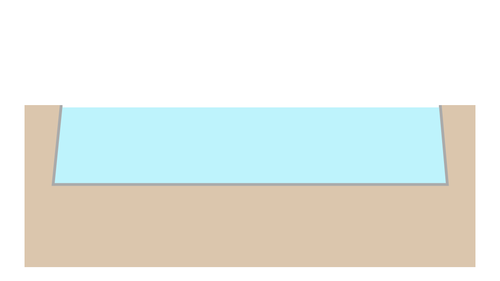

Durante los últimos años, el litio ha ganado una gran importancia dentro de la explotación de minerales debido a su masivo uso. Si bien Chile es uno de los principales productores, la extracción de este ha generado varias situaciones y problemas, que han llevado a la discusión acerca de la legislación en el tema. El proceso constituyente actual además lo pone en la palestra, llevando a cuestionarse si es posible legislar sobre el tema a favor del país y del medioambiente.
¿Qué es el Litio?
Es un metal que se encuentra principalmente en salmueras naturales, pegmatitas, pozos petrolíferos, campos geotermales y agua de mar. En Chile el litio es un mineral estratégico y de interés nacional, cuya propiedad es exclusiva del Estado, según lo establecido en el decreto Nº2886 del año 1979.
¿Para qué se usa?
Con él se hace el aluminio y ayuda a mejorar las propiedades del vidrio y cerámica dentro del proceso de fabricación de estas. Además, se usa como grasa lubricante para todo tipo de vehiculos, incluso industriales y militares, y también es utilizado en sistemas de aire acondicionado y control de humedad, ya que por sus propiedades puede absorber bien la humedad del aire. A pesar de todo lo anterior, su uso más popular son las baterías, ya que es capaz de entregar una mayor cantidad de energía que las baterías comunes, estando presente en muchos aparatos tecnológicos de uso diario.
¿Cómo se extrae?

1. Extracción
Todo comienza con la perforación de un agujero en la superficie y, luego, se procede al bombeo de la salmuera.

2. Salmuera
Se deja evaporar durante meses, para que de esa manera, se forme una mezcla de manganeso, potasio, bórax que se filtren y se colocan a evaporar.
3. Refinado
Todo el proceso concluye en 12 y 18 meses, período que se toma para que la mezcla se filtre lo suficiente como para extraer el carbonato de litio.
Reservas mundiales de Litio
(Servicio Geológico de los Estados Unidos – USGS, 2016)
Las reservas consideradas son las que tienen estudios técnicos de factibilidad totalmente probadas que incluyen análisis de producción con determinación de Capex y Opex, procesamiento, avances y permisos socioambientales completos que les permite actualmente tener una producción sostenida.
Precio del Litio
(metalary.com)
A diferencia de otros metales, el litio no se comercializa en bolsas internacionales. Su precio depende de las negociaciones directas entre compradores y productores, por contratos de suministro de largo plazo. Chile es el productor con el precio más bajo del mineral.